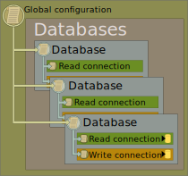

Configuration Deep-Dive
Introduction
Geo-dispersed deployments and SDLC staging processes require application deployments in many distinct environments. Managing configurations in each environment is already a challenge. Worse, sharded data sets can create a very large number of connections, amplifying the configuration problem further. Then, scale-out of read and write endpoints doubles the number of connections. In the end, there can be a lot of connections to manage.
ArgentSea is designed to make this potentially large number connections manageable. Using the configuration architecture in .NET core and a unique configuration hierarchy, ArgentSea allows application changes to be promoted through staging environments and deployed into multiple production environments. It does this while storing passwords securely and without the need for messy transformations.
ArgentSea Data Connections
There are two types of data connections in ArgentSea:
- A database connection - a data set which is hosted by a single database
- A shard set - a data set spread over multiple database connections
A shard set represents a set of data that is spread among multiple database servers. This structure is common for high-performance data access, since it is usually more cost effective and predictably scalable to have multiple smaller database servers than to build one massive server. Global applications might try to improve performance for their global users by distributing shards in datacenters around the globe. The ArgentSea data access components allow you to query across multiple servers or a find specific record on its corresponding host server.
ArgentSea configuration supports any number of database definitions in the Databases collection, and any number of shard sets in the ShardSets collection. Each shard set can have any number of database connections (shard instances).
 |  |
All data connections have the option of separate read and write connections. If you are scaling-out your data access by sharding your data, you are likely also scaling-out by separating read activity from write operations. Examples of this includes SQL Server Availability Groups, Amazon RDS Read Replicas, Azure SQL geo-replication, Amazon Aurora reader endpoints, etc.
All this creates a potentially large number of connections. Many of these will likely have similar connection information. For example, all of the connections in a shard set might use the same login information or database name, varying only the server address. To manage this redundancy, ArgentSea offers a unique configuration hierarchy.
The Configuration Hierarchy
The Configuration Hierarchy, allows users to configure their data connection information at multiple levels. Child nodes “inherit” any settings of their parent. By dramatically reducing configuration redundancy, it makes handling multiple connections much more manageable.
Connection Attributes
ArgentSea essentially dispenses with traditional connection strings (although you can use them if you really want to). Instead, it uses the .NET configuration architecture to manage each attribute as a discrete property. Each property can be managed globally, or at the shardSet, database, or connection level. Lower-level settings inherit values from their parent, which they can also overwrite if their own values are set differently.
For example, if your network infrastructure supports jumbo frames, you can configure the network packet size once in the global configuration section and every ArgentSea connection will default to this value.
The complete set of available properties is:
{
"ApplicationIntent": "ReadWrite",
"ApplicationName": "MyWebApp",
"CircuitBreakerFailureCount": 20,
"CircuitBreakerTestInterval": 5000,
"ConnectTimeout": 2,
"CurrentLanguage": "english",
"DataSource": "localhost",
"Encrypt": false,
"FailoverPartner": "MyMirror",
"InitialCatalog": "MyDb",
"LoadBalanceTimeout": 0,
"MaxPoolSize": 100,
"MinPoolSize": 0,
"MultipleActiveResultSets": false,
"MultiSubnetFailover": true,
"PacketSize": 4096,
"Password": "pwd1234",
"PersistSecurityInfo": false,
"Pooling": true,
"Replication": true,
"RetryCount": 6,
"RetryInterval": 256,
"RetryLengthening": "Fibonacci",
"TransactionBinding": "",
"TrustServerCertificate": true,
"TypeSystemVersion": "Latest",
"UserInstance": "",
"UserName": "webUser",
"WindowsAuth": false,
"WorkstationID": "MyPC"
}
Caution
Displayed are all of the available properties. It is neither necessary nor wise to set all of them. All that is typically required for most connections is login information, a server or host name, and a database name.
Each level in the Configuration Hierarchy can use any of the properties on this list.
The Global Section
The root of the configuration hierarchy is the “global settings” section. All properties set here are applied to every data connection — unless the value is overwritten by lower-level properties (i.e. database, shard set, shard, etc.).
The SQL Server global section is SqlGlobalSettings. Any attributes specified in this section are applied to all SQL Server connections.
For example, to globally change both the connection timeout property and packet size:
{
"SqlGlobalSettings": {
"ConnectTimeout": 3,
"PacketSize": 8196
}
}
Note that these examples include only the attributes (from the previous section) that we want to change.
(Non-Sharded) Database Connections
The database configuration architecture allow any number of database connections. Each connection is identified by a key, which you also use to request the connection in your code. The key in your configuration must exactly match the keys used in your code (i.e casing, accents, and kana must match).
Database connections have a three-level hierarchy: global properties, database properties, and properties for distinct read and write endpoints. This illustration shows how various “parent” configuration properties are applied to the child values. Ultimately, these values are combined to build a Read or Write connection.

The JSON section for SQL database connections is SqlDbConnections. This is an array of connections. Each connection has a required DatabaseKey property, and whatever connection properties are needed for the connection.
{
"SqlDbConnections": [
{
"DatabaseKey": "MainDb",
"DataSource": "DbServer1",
"InitialCatalog": "MainDb",
"WindowsAuth": true
},
{
"DatabaseKey": "OtherDb",
"DataSource": "DbServer1",
"InitialCatalog": "OtherDb",
"WindowsAuth": true,
"WriteConnection": {
"DataSource": "DbServer2"
}
},
{
"DatabaseKey": "ThirdDb",
"ReadConnection": {
"DataSource": "DbServer3",
"InitialCatalog": "Db1",
"UserName": "apiUser",
"Password": "pwd1234"
},
"WriteConnection": {
"DataSource": "DbServer4",
"InitialCatalog": "Db2",
"UserName": "webUser",
"Password": "pwd5678"
}
}
]
}
Each connection has two optional child sections, ReadConnection and WriteConnection. These can be set explicitly if you want different values between read and write connections; otherwise, both read and write connections these will inherit from the parent properties.
In the example above, the first connection has the same values for read and write connections (both Read and Write connections inherit the same values from the parent). The second connection will access a different server for read connections than write connections. The third connection explicitly defines connection information for both the Read and Write connections.
As mentioned before, any connection property from the complete property list (as listed earlier), can be included in the database definition, read connection, or write connection.
Shard Set Connections
ArgentSea shard sets have up to four inheritance levels: global properties, shard set properties, shard properties, and distinct read and write endpoint properties. The corresponding illustration again shows how various “parent” configuration properties are applied to the child values. As with non-sharded databases, these values are combined to build a Read or Write connection.

The root JSON section for SQL shard connections is SqlShardSets. This is an array of shard sets, each of which has an array of shards. Presumably, most applications will not require multiple shard sets, but the capability exists if required.
Each shard set has a required ShardSetName property. This value is how the shard set retrieved from within the application, so the characters must exactly match.
{
"SqlShardSets": [
{
"ShardSetName": "Primary",
"DataSource": "DbServer1",
"FailoverPartner": "Mirror1",
"UserName": "webUser",
"Password": "pwd1234",
"Shards": [
{
"ShardId": 0,
"InitialCatalog": "ShardDb1",
"ReadConnection": {
"ApplicationIntent": "ReadOnly",
"DataSource": "Mirror1",
}
},
{
"ShardId": 1,
"InitialCatalog": "ShardDb2",
"ReadConnection": {
"ApplicationIntent": "ReadOnly",
"DataSource": "Mirror1",
}
}
]
}
]
}
In this example, there is one shard set with two shards as two databases on the same server. The read connections are directed to a mirror by overwriting the inherited DataSource value with the name of the mirror.
Again, any connection property from the complete property list (as listed earlier), can be included in the shard set definition (to be used by all connections in the shard set), or shard instance (to be used by both Read and Write connections), or to specifically configure the Read and/or Write connection.
In a typical data sharding implementation, all shard connections are likely to use same login information and each server may even use the same database name. The configuration hierarchy makes this easy to manage because the login information and database can be defined once for the shard set, then used by every connection.
The Shard Identifier Type
End each shard instance has a ShardId property, which identifies a specific subset (“shard”) of the data. This value is critical because it is not simply a key for a shard instance; the ShardId is generally used in combination with the record key to uniquely identify a record.
Put another way, records in the shard set are identified with a sort of virtual compound key, consisting of the shard identifier and the record key. Because record in a data shard may refer to records in other shards, the “foreign key” reference requires saving the shard identifier too.
Because of the need to persist the ShardId inside database records, the data type of the ShardId is critical. ArgentSea uses a generic ShardId to allow you to define any data type you prefer.
Important
Once established, the ShardId type cannot be easily changed. The ShardId type is used in configuration, throughout your code, in the database, and across all shard sets. Make sure that you will not outgrow your ShardId type’s maximum value, nor unnecessarily require space that will never be used.
If you are uncertain, consider using a short (Int16/smallint) data type for your ShardId.
The JSON ShardId type must correspond to whatever type you have defined for your application’s ShardId. If your application defines its ShardId as a string, then the JSON should be a string value (i.e. be in quotes); if a number, it should be numeric (i.e. a number, without quotes).
More details about the ShardId type is in the Sharding section
The .NET Core Configuration Architecture
ArgentSea fully leverages the configuration architecture of .NET Core. If this architecture is new to you, it essentially consists of two parts:
- A configuration Dictionary, which can be loaded from multiple sources — one of which is typically a file called appsettings.json
- An “Options” architecture, which casts the configuration entries into a strongly-typed configuration objects.
One of the key improvements of the configuration architecture in .NET standard is the dictionary architecture, which allows entries to be loaded and combined from multiple sources. So, for example, you might load the account names from an appsettings.json configuration file, the passwords from a secrets.json file (or Key Vault or Secrets Manager), and the server names from environment variables. Properly managed, this can make deployments both easier and more secure.
The previous examples all used JSON for configuration. This is not a requirement. In non-JSON configuration contexts, like environment variables, you can specify these values as key-value pairs. The key concatenates the hierarchy separated by “:”. Arrays and lists should include an index.
The same configuration information listed above can be stored and loaded as key-value pairs. An example of the same shard set configuration in non-JSON format would be:
| Key | Value |
|---|---|
| SqlShardSets:0:ShardSetName | Primary |
| SqlShardSets:0:DataSource | DbServer1 |
| SqlShardSets:0:FailoverPartner | Mirror1 |
| SqlShardSets:0:UserName | webUser |
| SqlShardSets:0:Password | pwd1234 |
| SqlShardSets:0:Shards:0:ShardId | 0 |
| SqlShardSets:0:Shards:0:InitialCatalog | ShardDb1 |
| SqlShardSets:0:Shards:0:ReadConnection:ApplicationIntent | ReadOnly |
| SqlShardSets:0:Shards:0:ReadConnection:DataSource | Mirror1 |
| SqlShardSets:0:Shards:1:ShardId | 1 |
| SqlShardSets:0:Shards:1:InitialCatalog | ShardDb2 |
| SqlShardSets:0:Shards:1:ReadConnection:ApplicationIntent | ReadOnly |
| SqlShardSets:0:Shards:1:ReadConnection:DataSource | Mirror1 |
Because .NET Core’s configuration architecture allows values to be aggregated from multiple data stores, we can create configuration entries where they can be most conveniently managed. Gone are the days of needing to transform configuration files upon deployment (unless you really like that type of thing).
Typically, there are three types of configuration entries:
- Secure values, like passwords or keys, which should not be readily accessible.
- Environment-specific values, like server names, which change as releases are promoted through various environments.
- Application values, which specify how the application should consistently behave.
This capability is critical for managing configuration outside of the application. Using key-value pairs allows configuration values to be hosted in environment variables and secure stores.
Securing Passwords
In a development environment, you should consider using the UserSecrets functionality, which prevents this information from being checked into your source code repository.
UserSecrets uses a JSON file, so the password entries can be simply removed from the appsettings.json file and stored in the secrets.json file. Note that the object counts must be consistent between your appsettings.json file and the secrets.json file.
User Secrets
{
"SqlDbConnections": [
{
},
{
},
{
"ReadConnection": {
"Password": "pwd1234"
},
"WriteConnection": {
"Password": "pwd5678"
}
}
]
}
In other environments, you might consider using AWS Secrets Manager, Azure Key Vault, Docker secrets, a secure file share, or something similar.
Most of these secrets stores store key value pairs. The .NET configuration manager resolves the hierarchical JSON files with a semi-colon, “:”, separator between the property hierarchy. Array elements are referenced with an index value.
Tip
Systems that don’t support semi-colon separators in their keys (AWS Secrets Manager, for example) can use double underscores (“__”) instead.
Consequently, the previous JSON values could be saved as corresponding key-value pairs as:
| Key | Value |
|---|---|
| SqlDbConnections:2:ReadConnection:Password | pwd1234 |
| SqlDbConnections:2:WriteConnection:Password | pwd5678 |
In reality, most implementations would have a single secure password used for every shard connection, in which case the key in your secrets store is simply:
| Key | Value |
|---|---|
| SqlShardSets:0:Password | pwd1234 |
Environment-specific Configuration
Managing configuration through multiple staging and release environments works the same way. You can store environment-specific settings — like server names or database names — in server environment variables. These are also key-value pairs, so the .NET Core configuration hierarchy would be rendered to keys in the same way as described in the previous section.
The database configuration JSON presented previously would be saved in environment variables as:
| Key | Value |
|---|---|
| SqlDbConnections:0:DataSource | DbServer1 |
| SqlDbConnections:0:InitialCatalog | MainDb |
| SqlDbConnections:1:DataSource | DbServer1 |
| SqlDbConnections:1:InitialCatalog | OtherDb |
| SqlDbConnections:1:WriteConnection:DataSource | DbServer2 |
| SqlDbConnections:1:ReadConnection:DataSource | DbServer3 |
| SqlDbConnections:1:ReadConnection:InitialCatalog | Db1 |
| SqlDbConnections:1:WriteConnection:DataSource | DbServer4 |
| SqlDbConnections:1:WriteConnection:InitialCatalog | Db2 |
Note
The order of configuration loading matters. Your Startup class should load appsettings.json first. When the environment variables are subsequently loaded, any existing values in appsettings.json will be overwritten.
ArgentSea uses the configuration dictionary built into .NET Core, so you can use any compatible configuration provider — including files, command line arguments, databases, and more.
There are no restrictions on which configuration entries belong to which providers (data sources). You can store passwords in environment variables or even command arguments, if you want to. Pick the right platform to management your data effectively, ArgentSea can use it as long as the values are consolidated correctly into the configuration dictionary.
Configuration Options
The next phase in .NET Core’s configuration processing is the Options rendering. This converts the aggregated dictionary entries into strongly typed configuration objects, called Options. ArgentSea uses these typed Options objects to build its ShardSets and Databases services.
Unfortunately, a misconfigured property or entry can cause the Options class to be null when a value was expected. This can be difficult to debug, as there are often no error messages, just a null result. You can debug the Options classes during startup to see which values are unexpectedly null. Experiment with removing configuration values until the Options classes render as expected.
The JSON object hierarchy and property types should exactly match those of the Options objects, so if you have any doubts, explore the Options classes using C# or other strongly typed language.
Resilience Strategies
Unexpected failures happen, and business-critical applications must be able to recover gracefully. ArgentSea uses Polly to offer a combination of retry logic and circuit breaking.
The properties specific to a resilience strategy are:
{
"CircuitBreakerFailureCount": 20,
"CircuitBreakerTestInterval": 5000,
"ConnectTimeout": 5,
"RetryCount": 6,
"RetryInterval": 256,
"RetryLengthening": "Fibonacci",
}
If no retry or circuit breaking properties are configured, ArgentSea uses a default resilience strategy using automatic retries and circuit breaking. Like everything else, these values participate in the ArgentSea configuration hierarchy — you can set these values globally (most likely) or at any level down to the individual Read or Write connection.
Retries
Retries occur on errors that are defined as transient. A network interruption may quickly resolve itself, so it makes sense to retry after a short interval; it doesn’t make sense to retry after a permission exception. (The list of errors defined as transient is in the provider-specific implementation of IDataProviderServiceFactory. You can view this in the source code).
The properties that define the retry behavior are:
- The
RetryCountsetting determines how many times the connection retries before aborting and raising an error back to the caller. - The
RetryIntervaldetermines the length of time (in milliseconds) between retries. - The
RetryLengtheningvalue can add an additional pause between subsequent retries.
Presumably, if the system encounters a transient error, it should retry quickly, then, if the retry is not successful, it should wait a bit longer for the error to clear before retrying again. The RetryLengthening value is what determines how much longer it will pause on subsequent retries before giving up.
The Retry Sequence Lengthening values are:
- Linear - each retry is the same duration as specified in
RetryInterval - Fibonacci - The first retry is at
RetryInterval, each subsequent retry interval pauses for the duration of the previous two combined. - HalfSquare - the retry count number is squared, then divided by two, then multiplied by
RetryInterval - Squaring - each retry attempt doubles the duration of the previous one.
You can visualize the impact of RetryLengthening with these charts:


If a Resilience Strategy is not defined, ArgentSea will use a default strategy. Currently, this is:
| Setting | Default Value |
|---|---|
| RetryCount | 6 tries |
| RetryInterval | 256 milliseconds |
| Lengthening | Fibonacci |
| (Connect) Timeout | 5 |
Note
SQL Server’s ADO.NET provider also offers automatic retries. ArgentSea disables this in lieu of its own functionality, which logs these automatic retries. This valuable environment diagnostic information should not be invisible.
Connection Timeout
The connection timeout value is critical to determining the duration of connection attempts before failure. The ADO.NET default of 15 seconds is far too long, so the ArgentSea default is 2 seconds. Datacenter connections are generally resolved in that time unless something is wrong. If you have a WAN or high-latency connection, you should consider increasing this value.
It is not guaranteed that any defaults will remain unchanged in future versions.
Note that a high RetryCount and/or connection timeout could create a very long delay before a connection is allowed to ultimately fail.
Circuit Breaking
When a database connection is unavailable, this can cause serious downstream problems. Processes may pile-on further requests even while earlier requests are simply waiting to time out. As this continues, the queue of backlogged requests becomes so large that the caller itself can manage no more. The bottleneck will then start blocking other systems too. What started as a broken connection to a single database eventually becomes fatal to the entire system!
This is the reason to add a “circuit breaker” — a fail-fast mechanism to ensure that callers do not wait needlessly for queued connections that are unlikely to succeed, and which are blocking other processes too.
Once the circuit breaker is tripped, subsequent connections will fail immediately. This prevents queuing, bottleneck blocking, and downstream failures. While tripped, the circuit breaker will periodically allow a single transaction to proceed; if it successful the circuit breaker is reopened. In this way, a system restoration will automatically close the circuit breaker too so that connections can resume.
The CircuitBreakerFailureCount value determines how many sequential failures will trigger the circuit breaker. The CircuitBreakerTestInterval value determines how often (in milliseconds) the circuit breaker will allow a single transaction through.
Loading the Configuration
ArgentSea uses .NET Core’s built-in Options configuration and dependency injection architecture. The complexity of turning a JSON configuration file into a connection object is as simple as calling an extension method in the ConfigureServices method of your Startup class.
This example assumes that your ShardId type is byte. If you use any other type, change the generic parameter.
If you use ArgentSea database connections without sharding, simply remove the generic declaration altogether (i.e. services.AddPgServices(Configuration); only).
public void ConfigureServices(IServiceCollection services)
{
...
// add your injectable logging provider
services.AddLogging();
// add the ArgentSea SQL database connections (ShardId type: byte)
services.AddSqlServices<byte>(Configuration);
// now add your custom data classes, which use the data components
services.AddSingleton<MyDataStore>();
...
services.AddMvc();
...
}
This code references a Configuration property. It is common practice to obtain the configuration object from the constructor of the Startup class, then use this to set the Configuration property.
Failover
ArgentSea itself does not currently include functionality that enables an automatic failover to a standby database server. This is often managed through DNS changes or via configuration of the .NET data provider (such as the FailoverPartner property), which may not even require client connection string changes. Furthermore, business continuity plans typically do not expect disaster recovery plans to be fully “automatic” at the individual client level; a lot of infrastructure must be coordinated in a robust failover, and a rogue client should not failover without a coordinated signal.
Once created, both the ShardSets and Databases singleton collections are immutable, but any property in the configuration hierarchy can still be updated. In other words, after the configuration hierarchy is created, you cannot change the structure of the hierarchy, but the connection properties of the members can still be changed and will update the client connections. Child objects will also continue to inherit any updates from their parents. This allows you to build failover logic that updates the connection information — server endpoints, database names, etc. — given whatever trigger you prefer.
Simplifying Data Connections
As per standard practice in .NET Core, any data repository class can use the ArgentSea data access component by having the service injected into its constructor.
For example, requesting the databases collection in your data access class is straightforward:
public class MyDataAccessStore
{
public MyDataAccessStore(SqlDatabases dbs, ILogger<MyDataAccessStore> logger)
{
_dbs = dbs; // capturing injected SqlDatabases collection
...
The injected data access component allows the class to access any database in the SqlDatabases connection. This means that you would need to specify the collection key to access a particular database or shard set.
In most cases, a class will only access a single data source, so, to simplify the data access code, you can instead store only the relevant connection instance:
public class MyDataAccessStore
{
private readonly SqlDatabases.DataConnection _data;
public MyDataAccessStore(SqlDatabases dbs, ILogger<MyDataAccessStore> logger)
{
_data = dbs["MyConnectionKey"]; // capturing relevant database
...
Setup this way, subsequent calls to the SQL database can be on methods directly on the _data object. Now, calls within the class do not need to specify a key.
Simplifying The ShardId Generic Type
The ShardSets object has even more need of simplification. As with Databases, a single class typically does not need to access multiple ShardSets, so one can follow the same approach as with the Databases example to reference only the relevant ShardSet within your class.
The other ShardSet complexity is the need to repeatedly declare the ShardId type. Within your project, this will always be the same value, but programming against the ArgentSea library directly means declaring the type over and over again.
There are two solutions to this:
- Use the
usingstatement to alias the ShardSet declaration. - Declare classes in your project which inherit from ShardSet, ShardKey, and ShardChild, but with the generic defined. Use these classes in your project.
Using “using”
As an example of the first approach, to simplify calling a ShardSet within a single file, simply add these using statements:
using ShardSets = ArgentSea.Sql.SqlShardSets<byte>;
// and/or
using ShardSet = ArgentSea.Sql.SqlShardSets<byte>.ShardDataSet;
This example assumes a ShardId type of byte; replace this as appropriate.
An example of how this might be used in the same class we showed before:
using ShardSets = ArgentSea.Sql.SqlShardSets<byte>;
using ShardSet = ArgentSea.Sql.SqlShardSets<byte>.ShardDataSet;
public class MyDataAccessStore
{
private readonly ShardSet _data;
public MyDataAccessStore(ShardSets shards, ILogger<MyDataAccessStore> logger)
{
_data = shards["MyShardSetName"]; //select relevant shard set
...
The downside to the using approach is that it works for only the current file.
Child Classes
By creating a local class that inherits from the ArgentSea generic class, you can simplify the shard set reference throughout your project.
These are the classes you might create in your SQL project to simplify the ShardSet within our project.
public class MyShardSets : SqlShardSets<byte>
{
public SqlShardSets(
IOptions<SqlShardConnectionOptions<TShard>> configOptions,
IOptions<SqlGlobalPropertiesOptions> globalOptions,
ILogger<SqlShardSets<TShard>> logger
) : base(configOptions, globalOptions, logger)
{
//
}
}
public class MyShardKey : ShardKey<byte>
{
//
}
public class MyShardChild : ShardChild<byte>
{
//
}
This approach will be helpful in reducing the number of times the generic ShardId type must be specified in your project code.